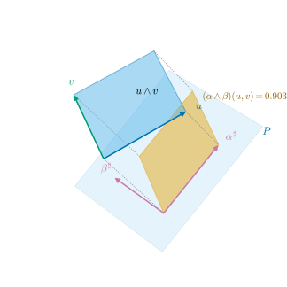

34.4 k-Forms as Measurement
Goals
- covector 두 개가 평행사변형의 그림자 넓이를, \(k\)개가 \(k\)차원 그림자 부피를 잰다는 것을 증명할 수 있다.
- \(k\)-form을 alternating multilinear 측정으로 이해하고, covector의 wedge product가 determinant 공식 \((\alpha^1\wedge\cdots\wedge\alpha^k)(u_1, \dots, u_k)\) \(= \det[\alpha^i(u_j)]\)을 만족함을 증명할 수 있다.
- \(k\)-form이 \(k\)-vector 위의 linear functional이고, 그 값이 \(\sharp\)한 \(k\)-vector와의 inner product임을 설명할 수 있다.
- \(k\)-form의 Hodge star를 계산하고 \(\alpha\wedge\star\beta = \inner{\alpha}{\beta}\,e^1\wedge\cdots\wedge e^n\)을 쓸 수 있다.
Prerequisites
- Definition 34.1.1 (k-vector), Lemma 34.1.5 (expansion lemma), Proposition 34.1.6, Theorem 34.1.11, Corollary 34.1.12
- Proposition 34.2.1 (inner product of k-vectors), Definition 34.2.5 (Hodge star), Theorem 34.2.6, Proposition 34.2.8
- (34.3.1), Proposition 34.3.2, Proposition 34.3.4
- Definition 1.6.1 (multilinear and alternating), Theorem 1.6.8
Motivation
Section 34.3에서 covector \(\alpha\)는 vector를 한 방향으로의 그림자 길이로 잰다는 것을 보았다(Proposition 34.3.2). 이제 같은 질문을 한 차원 올리자. 평행사변형 \(u\wedge v\)를 어떻게 “재는가”? 1차원 측정 도구가 1차원(방향 하나)이었듯이, 넓이를 재는 도구는 평면 하나여야 한다. 평면에 평행사변형의 그림자를 드리우고 그 넓이를 읽는 것이다 [CMU-DDG L4].
이 측정은 mesh 계산의 기본 연산이다. Chapter 36의 discrete form은 oriented edge마다 1-form의 값을, oriented triangle마다 2-form의 값을 저장한다. 이 절은 그 값이 무엇인지, 어떤 공식으로 계산되는지, 왜 orientation에 따라 부호가 바뀌는지를 정확히 한다.
Measuring Areas by Shadows
평면 \(P\)를 orthonormal basis로 주면 그림자의 좌표를 바로 읽을 수 있다. Section 34.3에서 \(\alpha(x) = g(\alpha^\sharp, x)\)였으므로, 측정 도구로서의 평면은 \(\sharp\)이 orthonormal인 covector 두 개로 주는 것이 자연스럽다.
Proposition 34.4.1 (projected area). \((V, g)\)가 inner product space이고 \(\alpha, \beta \in V^*\)의 sharp \(\alpha^\sharp, \beta^\sharp\)이 orthonormal이라 하자. \(P = \Span(\alpha^\sharp, \beta^\sharp)\)에 orientation \((\alpha^\sharp, \beta^\sharp)\)을 주고 \(\pi\colon V \to P\)를 orthogonal projection이라 하자. 그러면 모든 \(u, v \in V\)에 대하여
이다. 즉 \(\alpha(u)\beta(v) - \alpha(v)\beta(u)\)는 그림자 평행사변형 \((\pi u, \pi v)\)의 \(P\) 안에서의 signed area다.
여기서 “\(P\) 안에서의 signed area”는 \(\pi u\wedge\pi v\)를 \(P\)의 양의 단위 2-vector \(\alpha^\sharp\wedge\beta^\sharp\)(크기 \(1\), Proposition 34.2.1)의 몇 배인지로 잰 값이다.
Proof. \((\alpha^\sharp, \beta^\sharp)\)는 \(P\)의 orthonormal basis이므로 \[ \pi x = g(\alpha^\sharp, x)\,\alpha^\sharp + g(\beta^\sharp, x)\,\beta^\sharp = \alpha(x)\,\alpha^\sharp + \beta(x)\,\beta^\sharp \]이다(Proposition 1.5.9(b)를 \(P\)에 맞춘 orthonormal basis에 쓰고 (34.3.1)을 쓴다). 따라서 \(\pi u, \pi v\)를 \((\alpha^\sharp, \beta^\sharp)\)로 쓴 성분 행렬은 \(\begin{pmatrix} \alpha(u) & \alpha(v) \\ \beta(u) & \beta(v)\end{pmatrix}\)이고, Proposition 34.1.6(a)가 (34.4.1)을 준다.
Figure 34.4.1을 보자. 위의 하늘색 평행사변형이 \(u\wedge v\)이고, 아래의 옅은 하늘색 사각형이 측정 평면 \(P\)다(평행 이동한 사본). 자주색 화살표 \(\alpha^\sharp, \beta^\sharp\)이 \(P\)를 펼치는 orthonormal basis, 곧 측정 도구다. 회색 점선을 따라 \(u\wedge v\)를 \(P\)에 수직으로 내리면 주황 그림자가 생기고, 그 signed area가 \(0.903\)이다. 원래 넓이 \(\abs{u\wedge v} = 1.069\)보다 작다. 평행사변형이 \(P\)에 대해 기울어 있기 때문이다.

k-Forms
\(\alpha(u)\beta(v) - \alpha(v)\beta(u)\)는 \(u\)와 \(v\) 각각에 대해 linear이고, \(u\)와 \(v\)를 맞바꾸면 부호가 바뀐다. 이런 측정을 일반화한 것이 \(k\)-form이다. Crane은 이것을 “\(k\)-vector의 fully antisymmetric, multilinear 측정”이라 부른다 [CMU-DDG L4].
Definition 34.4.2 (k-form on a vector space). \(V\)가 \(n\)차원 vector space이고 \(k \ge 1\)이라 하자. \(k\)-multilinear이고 alternating인(Definition 1.6.1) 함수 \(\omega\colon V \times \cdots \times V \to \R\)(\(V\)가 \(k\)개)을 \(V\) 위의 k-form(k-형식)이라 하고, 그 전체를 \(\Lambda^k(V^*)\)로 쓴다. 0-form은 scalar다: \(\Lambda^0(V^*) = \R\).
\(\Lambda^k(V^*)\)는 점마다의 덧셈과 scalar 곱으로 vector space다. 1-form은 covector와 같다(\(\Lambda^1(V^*) = V^*\)). 이 대상의 엄밀한 정본은 Chapter 17의 alternating covariant tensor다(Section 17.1, Notation and Conventions의 \(\Lambda^k(V^*)\)). 기호 \(\Lambda^k(V^*)\)가 “\(V^*\)의 exterior algebra”처럼 보이는 것은 우연이 아니다. Theorem 34.4.6이 정말 그렇다는 것을 보인다.
Example 34.4.3 (k-forms you already know). (a) \(\R^n\)의 determinant \((u_1, \dots, u_n) \mapsto \det(u_1, \dots, u_n)\)는 \(n\)-form이다(Theorem 1.6.5). (b) Proposition 34.4.1의 \((u, v) \mapsto \alpha(u)\beta(v) - \alpha(v)\beta(u)\)는 2-form이다. (c) \(\R^3\)에서 고정된 \(w\)에 대한 \((u, v) \mapsto \inner{w}{u\times v}\)는 2-form이다(cross product는 bilinear이고 \(v\times u = -u\times v\), Theorem 1.6.16(a)). \(w\)가 flow의 속도라면 이 값은 평행사변형을 지나는 flux다.
Non-example 34.4.4. (a) inner product \((u, v) \mapsto \inner{u}{v}\)는 bilinear이지만 symmetric이라 2-form이 아니다(\(\inner{u}{u} \gt 0\)). (b) 넓이 \((u, v) \mapsto \abs{u\times v}\)는 \(u\)를 \(-u\)로 바꿔도 값이 그대로라 linear가 아니다. 부호를 떼어 낸 넓이는 측정 도구가 될 수 없다. (c) \((u, v) \mapsto \alpha(u)\beta(v)\) 하나만으로는 alternating이 아니다(\(\alpha = \beta\)이고 \(\alpha(u) \neq 0\)이면 \(u = v\)에서 \(0\)이 아니다). 반대 순서의 항을 빼야 2-form이 된다.
이제 covector의 wedge product를 \(k\)-form으로 만들자. covector \(\alpha^1, \dots, \alpha^k\)에 대하여 함수
를 생각하자. \(j\)번째 열 \((\alpha^1(u_j), \dots, \alpha^k(u_j))\)가 \(u_j\)에 대해 linear이고 determinant는 열에 대해 multilinear이고 alternating이므로 \(D[\alpha^1, \dots, \alpha^k]\)는 \(k\)-form이다. 또 \(i\)번째 행이 \(\alpha^i\)에 대해 linear이므로 \(D[\alpha^1, \dots, \alpha^k]\)는 \((\alpha^1, \dots, \alpha^k)\)에 대해서도 multilinear이고, 두 \(\alpha\)가 같으면 두 행이 같아 \(0\)이다(Theorem 1.6.8(c)). \(k = 1\)이면 \(D[\alpha] = \alpha\)이다. 이 기호는 이 절에서만 쓰는 임시 기호다.
Lemma 34.4.5 (basis k-forms). \((e_1, \dots, e_n)\)이 \(V\)의 basis이고 \((e^1, \dots, e^n)\)이 그 dual basis(Definition 1.3.4)라 하자. increasing multi-index \(I\)에 대해 \(e^I := D[e^{i_1}, \dots, e^{i_k}]\)로 두면 다음이 성립한다.
- (a) increasing multi-index \(J\)에 대하여 \(e^I(e_{j_1}, \dots, e_{j_k}) = \delta_{IJ}\)이다(\(I = J\)이면 \(1\), 아니면 \(0\)).
- (b) 모든 \(k\)-form \(\omega\)는 \(\omega = \sum_I \omega_I\, e^I\), \(\omega_I = \omega(e_{i_1}, \dots, e_{i_k})\)로 꼭 한 가지 방식으로 쓰인다. 따라서 \((e^I)\)는 \(\Lambda^k(V^*)\)의 basis이고 \(\dim\Lambda^k(V^*) = \binom{n}{k}\)이다. \(k \gt n\)이면 \(0\)이 아닌 \(k\)-form은 없다.
Proof. (a) \[ e^I(e_{j_1}, \dots, e_{j_k}) = \det[e^{i_a}(e_{j_b})] = \det[\delta^{i_a}_{j_b}] \]이다. \(I = J\)이면 identity matrix이고, \(I \neq J\)이면 \(J\)에 없는 \(i_a\)가 있어 \(a\)번째 행이 모두 \(0\)이다. (b) \(\omega\)와 \(\sum_I\omega_I e^I\)는 둘 다 alternating multilinear이고 (a)에 의해 모든 \((e_{j_1}, \dots, e_{j_k})\)(\(J\) increasing)에서 값이 같으므로, Lemma 34.1.5(\(Z = \R\))에 의해 같다. coefficient의 유일성은 \(\sum_I c_I e^I = 0\)에 \((e_{j_1}, \dots, e_{j_k})\)를 넣으면 (a)에서 \(c_J = 0\)이기 때문이다. \(k \gt n\)이면 Lemma 34.1.5에 의해 모든 \(k\)-form이 \(0\)이다.
Theorem 34.4.6 (wedge product of forms and the determinant formula). Lemma 34.4.5의 basis로 bilinear map \(\wedge\colon \Lambda^k(V^*) \times \Lambda^l(V^*) \to \Lambda^{k+l}(V^*)\)을
\[ \begin{aligned} e^I\wedge e^J &:= D[e^{i_1}, \dots, e^{i_k}, e^{j_1}, \dots, e^{j_l}], \\ c\wedge\omega = \omega\wedge c &:= c\,\omega \ \ (c \in \R) \end{aligned} \]
로 정하자. 그러면 다음이 성립한다.
- (a) 모든 covector에 대하여 \[ \begin{aligned} &D[\alpha^1, \dots, \alpha^k]\wedge D[\beta^1, \dots, \beta^l] \\ &\quad = D[\alpha^1, \dots, \alpha^k, \beta^1, \dots, \beta^l] \end{aligned} \]이다. 특히 \(\wedge\)는 정의에 쓴 basis에 무관하다.
- (b) (determinant formula) 모든 covector \(\alpha^1, \dots, \alpha^k\)와 vector \(u_1, \dots, u_k\)에 대하여
\[ \begin{aligned} &(\alpha^1\wedge\cdots\wedge\alpha^k)(u_1, \dots, u_k) \\ &\quad = \det\big[\alpha^i(u_j)\big], \\ &(\alpha\wedge\beta)(u, v) = \alpha(u)\beta(v) - \alpha(v)\beta(u) \end{aligned} \tag{34.4.3} \]이다.
- (c) \((\Lambda^\bullet(V^*), \wedge)\)는 vector space \(V^*\)에 대하여 규칙 (W1)–(W4)(Definition 34.1.1)를 만족한다. 즉 \(k\)-form은 \(V^*\)의 \(k\)-vector이고, Section 34.1–34.2의 모든 결과가 \(k\)-form에 그대로 성립한다. \(e^I = e^{i_1}\wedge\cdots\wedge e^{i_k}\)는 \((e^i)\)의 basis \(k\)-vector다.
이 정리가 말하는 것. \(k\)-form은 두 얼굴을 가진다. 하나는 vector \(k\)개를 받아 수를 내는 측정(Definition 34.4.2)이고, 다른 하나는 covector들의 wedge로 만든 \(V^*\)의 \(k\)-vector다. 두 얼굴을 잇는 것이 determinant 공식 (34.4.3)이다. 즉 \(\alpha^1\wedge\cdots\wedge\alpha^k\)는 \(k\)개의 vector를 \(\alpha^1, \dots, \alpha^k\)로 재어 만든 \(k\times k\) 행렬의 determinant, 곧 “그림자의 부피”를 낸다 [CMU-DDG L4] slide 30.
Proof idea: (a)의 양변은 \(\alpha\)들에 대해(그리고 \(\beta\)들에 대해) alternating multilinear이므로 Lemma 34.1.5에 의해 basis covector를 증가하는 순서로 넣은 경우만 보면 된다. 그 경우는 정의 그 자체다. (b), (c)는 (a)에서 바로 나온다.
Proof. (a) \(\beta\)들을 고정하자. \((\alpha^1, \dots, \alpha^k) \mapsto D[\alpha]\wedge D[\beta]\)와 \((\alpha^1, \dots, \alpha^k) \mapsto D[\alpha, \beta]\)는 \((V^*)^k\)에서 \(\Lambda^{k+l}(V^*)\)로 가는 multilinear map이고 두 \(\alpha\)가 같으면 \(0\)이다(\(D\)의 성질과 \(\wedge\)의 bilinearity). Lemma 34.1.5를 \(W = V^*\), basis \((e^i)\)에 쓰면 두 map은 \((e^{i_1}, \dots, e^{i_k})\)(\(I\) increasing)에서의 값으로 정해지고, 거기서 \(D[e^{i_1}, \dots, e^{i_k}] = e^I\)이다. 따라서 모든 \(I\)와 모든 \(\beta\)에 대해 \(e^I\wedge D[\beta] = D[e^{i_1}, \dots, e^{i_k}, \beta]\)를 보이면 된다. 같은 논법을 \(\beta\)들에 쓰면 \(e^I\wedge e^J = D[e^{i_1}, \dots, e^{i_k}, e^{j_1}, \dots, e^{j_l}]\)만 보이면 되고, 이것은 정의다. 다른 basis \((e'^i)\)로 정의한 곱 \(\wedge'\)도 (a)를 만족하고, \(D[\dots]\) 꼴의 \(k\)-form들이 \(\Lambda^k(V^*)\)를 span하므로(Lemma 34.4.5(b)의 \(e^I\)가 그런 꼴이다) 두 bilinear map은 같다.
(b) \(k\)에 대한 귀납법. \(k = 1\)이면 \(D[\alpha^1] = \alpha^1\)이다. \(\alpha^1\wedge\cdots\wedge\alpha^{k-1} = D[\alpha^1, \dots, \alpha^{k-1}]\)이면 (a)에서 \[ \alpha^1\wedge\cdots\wedge\alpha^k = D[\alpha^1, \dots, \alpha^{k-1}]\wedge D[\alpha^k] = D[\alpha^1, \dots, \alpha^k] \]이다. \(k = 2\)이면 \(\det\begin{pmatrix} \alpha(u) & \alpha(v) \\ \beta(u) & \beta(v)\end{pmatrix}\)이다.
(c) bilinearity와 scalar에 관한 규칙은 정의다. 결합법칙: basis에서 (a)를 두 번 쓰면 \((e^I\wedge e^J)\wedge e^K\)와 \(e^I\wedge(e^J\wedge e^K)\)가 둘 다 \(D[e^{i_1}, \dots, e^{i_k}, e^{j_1}, \dots, e^{j_l}, e^{m_1}, \dots, e^{m_p}]\)(\(K = (m_1, \dots, m_p)\))이고, 양변이 trilinear이므로 일반적으로 성립한다. (W2): \(\alpha\wedge\alpha = D[\alpha, \alpha] = 0\)(두 행이 같다). (W3): Lemma 34.4.5(b)와 (b)에서 모든 \(k\)-form은 \(e^I = e^{i_1}\wedge\cdots\wedge e^{i_k}\)들의 합이다. (W4): \((e^1\wedge\cdots\wedge e^n)(e_1, \dots, e_n) = \det I = 1\)이므로 \(e^1\wedge\cdots\wedge e^n \neq 0\)이다.
k-Forms Measure k-Vectors
Crane의 표현대로 “부피는 부피로 잰다”. \(k\)-form은 vector \(k\)개를 받지만, 실제로는 그것들의 wedge인 \(k\)-vector만 본다.
Proposition 34.4.7 (pairing of k-forms and k-vectors). 각 \(k\)-form \(\omega\)에 대하여 모든 \(u_j\)에서 \(\omega(u_1\wedge\cdots\wedge u_k) = \omega(u_1, \dots, u_k)\)인 linear functional \(\xi \mapsto \omega(\xi)\)가 \(\Lambda^kV\) 위에 꼭 하나 있다. 이것으로 \(\Lambda^k(V^*)\)를 \(\Lambda^kV\)의 dual space \((\Lambda^kV)^*\)와 같은 것으로 볼 수 있고, 그때 \((e^I)\)는 \((e_I)\)의 dual basis다: \(e^I(e_J) = \delta_{IJ}\).
이 명제가 말하는 것. \(\omega(\xi)\)는 \(\xi\)를 simple \(k\)-vector의 합으로 어떻게 쓰든 같은 값이다(well-defined). 같은 2-vector를 주는 두 평행사변형(Figure 34.1.2(a))은 어떤 2-form으로 재도 같은 값이 나온다. 성분으로는 \(\omega(\xi) = \sum_I \omega_I\,\xi^I\)이다(Section 34.5).
Proof. \(\omega\)는 alternating multilinear이므로 Corollary 34.1.12가 그런 linear functional을 꼭 하나 준다. 그 functional은 \(\omega\)에 대해 linear이다. \(e^I\)가 주는 functional은 \(e_J\)에서 \(\delta_{IJ}\)이므로(Lemma 34.4.5(a)) \((e_I)\)의 dual basis(Definition 1.3.4)다. basis를 basis로 보내는 linear map이므로 \(\Lambda^k(V^*) \to (\Lambda^kV)^*\)는 isomorphism이다.
inner product가 있으면 측정을 inner product로 다시 쓸 수 있다. Section 34.3의 \(\alpha(u) = g(\alpha^\sharp, u)\)를 \(k\)차원으로 올리는 것이다. 이 절부터 \(\Lambda^k(V^*)\)에는 Proposition 34.3.4의 inner product를 \(V^*\)에 주고 Proposition 34.2.1을 쓴 inner product, 곧 \(\inner{\alpha^1\wedge\cdots\wedge\alpha^k}{\beta^1\wedge\cdots\wedge\beta^k}\) \(= \det[\inner{\alpha^i}{\beta^j}]\)를 준다.
Proposition 34.4.8 (sharp and flat on k-vectors). \((V, g)\)가 inner product space라 하자.
- (a) \((u_1\wedge\cdots\wedge u_k)^\flat = u_1^\flat\wedge\cdots\wedge u_k^\flat\)를 만족하는 linear map \(\flat\colon \Lambda^kV \to \Lambda^k(V^*)\)가 꼭 하나 있다. 이것은 isomorphism이고 역 \(\sharp\)은 \((\alpha^1\wedge\cdots\wedge\alpha^k)^\sharp = \alpha^{1\sharp}\wedge\cdots\wedge\alpha^{k\sharp}\)를 만족한다.
- (b) 모든 \(\omega \in \Lambda^k(V^*)\)와 \(\xi \in \Lambda^kV\)에 대하여 \(\omega(\xi) = \inner{\omega^\sharp}{\xi}\)이다.
- (c) \(\flat\)과 \(\sharp\)은 isometry다.
Proof. (a) \((u_1, \dots, u_k) \mapsto u_1^\flat\wedge\cdots\wedge u_k^\flat\)은 \(\flat\)이 linear이고 \(\wedge\)가 alternating multilinear이므로(Theorem 34.4.6(c)와 Proposition 34.1.3) alternating multilinear이다. Corollary 34.1.12가 \(\flat\)을 준다. 같은 방법으로 \(V^*\)에서 \(\sharp\)이 생긴다(Corollary 34.1.12를 \(V^*\)의 exterior algebra에 쓴다). 둘은 simple \(k\)-vector에서 서로 역이고, simple한 것들이 span하므로 서로 역이다.
(b) 양변이 \(\omega\)와 \(\xi\)에 대해 bilinear이므로 simple한 것에서만 보이면 된다. (34.4.3), (34.3.1), (34.2.1)에서 \[ \begin{aligned} &(\alpha^1\wedge\cdots\wedge\alpha^k)(u_1, \dots, u_k) \\ &\quad = \det[\alpha^i(u_j)] = \det[g(\alpha^{i\sharp}, u_j)] \\ &\quad = \inner{\alpha^{1\sharp}\wedge\cdots\wedge\alpha^{k\sharp}}{u_1\wedge\cdots\wedge u_k} \end{aligned} \]이다.
(c) \[ \begin{aligned} \inner{\alpha^1\wedge\cdots}{\beta^1\wedge\cdots} &= \det[\inner{\alpha^i}{\beta^j}] = \det[g(\alpha^{i\sharp}, \beta^{j\sharp})] \\ &= \inner{\alpha^{1\sharp}\wedge\cdots}{\beta^{1\sharp}\wedge\cdots} \end{aligned} \]이다(Proposition 34.3.4(a)).
Corollary 34.4.9 (k-forms measure projected volume). \(\alpha^1, \dots, \alpha^k\)의 sharp가 orthonormal이라 하자. \(P = \Span(\alpha^{1\sharp}, \dots, \alpha^{k\sharp})\)에 orientation \((\alpha^{1\sharp}, \dots, \alpha^{k\sharp})\)를 주고 \(\pi\)를 \(P\)로의 orthogonal projection이라 하면
\[ \begin{aligned} \pi u_1\wedge\cdots\wedge\pi u_k = {} & (\alpha^1\wedge\cdots\wedge\alpha^k)(u_1, \dots, u_k) \\ & \times\alpha^{1\sharp}\wedge\cdots\wedge\alpha^{k\sharp} \end{aligned} \]
이다. 즉 \(\alpha^1\wedge\cdots\wedge\alpha^k\)는 parallelepiped의 \(P\)로의 그림자의 signed \(k\)차원 부피를 잰다. simple \(k\)-form \(c\,\alpha^1\wedge\cdots\wedge\alpha^k\)는 그 \(c\)배를 잰다.
Proof. Proposition 34.4.1의 증명과 같다. \(\pi x = \sum_i \alpha^i(x)\,\alpha^{i\sharp}\)이므로 성분 행렬은 \([\alpha^i(u_j)]\)이고, Proposition 34.1.6(a)와 (34.4.3)이 결과를 준다.
sharp가 orthonormal이 아니어도 Proposition 34.4.8(b)가 일반적인 답을 준다: \(\omega(\xi) = \inner{\omega^\sharp}{\xi}\)는 “\(\omega^\sharp\)의 크기 \(\times\) \(\xi\)를 \(\omega^\sharp\)의 \(k\)-평면으로 정사영한 그림자의 부피”다. Crane의 말로는 projected area가 \(\alpha^\sharp, \beta^\sharp\)이 만드는 평행사변형의 넓이만큼 배가 된다 [CMU-DDG L4] slide 23.
Example 34.4.10 (measuring in space). 유클리드 \(\R^3\)과 standard basis를 쓴다.
- (a) basis 2-form \(e^1\wedge e^2\)는 \(xy\)평면으로의 그림자 넓이를 잰다(Corollary 34.4.9, \(e^{i\sharp} = e_i\)). Example 34.1.10의 \(u = (1, 2, 3)\), \(v = (-1, 0, 2)\)이면 (34.4.3)에서 \((e^1\wedge e^2)(u, v) = 1\cdot 0 - (-1)\cdot 2 = 2\), \((e^1\wedge e^3)(u, v) = 1\cdot 2 - (-1)\cdot 3 = 5\), \((e^2\wedge e^3)(u, v) = 2\cdot 2 - 0\cdot 3 = 4\)이다. \(u\wedge v\)의 성분 \(2, 5, 4\)와 같다. Proposition 34.4.7대로 \(e^I\)는 성분 \(\xi^I\)를 읽는다.
- (b) Figure 34.4.1의 기울어진 평면: \(\alpha = \cos 40^\circ\,e^1 + \sin 40^\circ\,e^3\), \(\beta = e^2\), \(u = (1.1, 0, 0.25)\), \(v = (0.2, 0.9, 0.35)\)이면 \(\alpha(u) = 1.003\), \(\alpha(v) = 0.378\), \(\beta(u) = 0\), \(\beta(v) = 0.9\)이므로 \((\alpha\wedge\beta)(u, v) = 0.903\)이다.
- (c) 3-form: \(\alpha, \beta, \gamma\)의 sharp를 열로 하는 행렬을 \(A\), \(u, v, w\)를 열로 하는 행렬을 \(U\)라 하면 \([\alpha^i(u_j)] = A^{\mathsf T}U\)이므로 \((\alpha\wedge\beta\wedge\gamma)(u, v, w) = \det A\,\det U\)이다. “부피를 부피로 잰다”: 측정 도구 \((\alpha^\sharp, \beta^\sharp, \gamma^\sharp)\)의 부피 \(\times\) 재는 상자의 부피. 특히 \(e^1\wedge e^2\wedge e^3 = \det\)이다.
Verification: verify/v-34-4-k-forms.py
The Hodge Star on k-Forms
Proposition 34.3.4에 의해 \(V^*\)는 orientation이 있는 inner product space이고, Theorem 34.4.6(c)에 의해 \(\Lambda^\bullet(V^*)\)는 그 exterior algebra다. 따라서 Definition 34.2.5를 그대로 \(V^*\)에 쓰면 \(k\)-form의 Hodge star \(\star\colon \Lambda^k(V^*) \to \Lambda^{n-k}(V^*)\)가 생긴다. 새로 정의할 것은 없다.
Proposition 34.4.11 (Hodge star on k-forms). \(V\)가 orientation이 있는 \(n\)차원 inner product space이고 \((e_i)\)가 positively oriented orthonormal basis, \((e^i)\)가 그 dual basis라 하자.
- (a) \(\star e^I = \sgn(I, I^c)\,e^{I^c}\)이다(부호는 (34.2.4)와 같다). 특히 \(\star 1 = e^1\wedge\cdots\wedge e^n\)이다.
- (b) 모든 \(\alpha, \beta \in \Lambda^k(V^*)\)에 대하여 \(\alpha\wedge\star\beta = \inner{\alpha}{\beta}\;e^1\wedge\cdots\wedge e^n\)이다.
- (c) \(\star\) commutes with \(\flat\): 모든 \(\xi \in \Lambda^kV\)에 대하여 \((\star\xi)^\flat = \star(\xi^\flat)\)이다.
- (d) \(\star\star = (-1)^{k(n-k)}\)이고 \(\star\)는 isometry다.
이 명제가 말하는 것. \(k\)-form의 \(\star\)는 \(\flat\)으로 옮긴 \(k\)-vector의 \(\star\)이고, 계산은 basis \(k\)-vector의 표와 똑같다. \(e^1\wedge\cdots\wedge e^n\)은 positively oriented orthonormal basis에서 \(1\)을 내는 \(n\)-form, 즉 \(V\)의 부피를 재는 형식이다.
Proof. Proposition 34.3.4(b), (c)에 의해 \((e^i)\)는 \(V^*\)의 positively oriented orthonormal basis이고, Theorem 34.4.6(c)에 의해 \(e^I\)는 그 basis \(k\)-vector다. 따라서 (a), (b), (d)는 Theorem 34.2.6과 Proposition 34.2.9를 \(V^*\)에 쓴 것이다(\(V^*\)의 단위 \(n\)-vector가 \(e^1\wedge\cdots\wedge e^n\)). (c) 양변이 \(\xi\)에 대해 linear이므로 \(\xi = e_I\)에서 보이면 된다. Proposition 34.3.4(b)에서 \(e_i^\flat = e^i\)이므로 Proposition 34.4.8(a)에서 \(e_I^\flat = e^I\)이고, (a)와 (34.2.5)에서 \[ \star(e_I^\flat) = \sgn(I, I^c)\,e^{I^c} = \big(\sgn(I, I^c)\,e_{I^c}\big)^\flat = (\star e_I)^\flat \]이다.
Example 34.4.12 (forms in the plane and in space). (a) \(\R^2\): \(\star e^1 = e^2\), \(\star e^2 = -e^1\), \(\star 1 = e^1\wedge e^2\)이다(Example 34.2.7을 \(V^*\)에서).
(b) \(\R^3\): \(\star e^1 = e^2\wedge e^3\), \(\star e^2 = e^3\wedge e^1\), \(\star e^3 = e^1\wedge e^2\)이고 \(\star(e^1\wedge e^2) = e^3\) 등이다((34.2.7)을 \(V^*\)에서). 1-form \(\alpha = a^\flat\)(\(a \in \R^3\))의 \(\star\alpha\)는 무엇을 재는가? Proposition 34.4.8(b), Proposition 34.4.11(c), Proposition 34.2.9, Proposition 34.2.8을 차례로 쓰면
이다. 즉 \(\star\alpha\)는 평행사변형 \((u, v)\)를 지나는 \(a\)의 flux를 잰다(Example 34.4.3(c)). 그림자로 말하면 \(\star\alpha\)는 \(a\)에 수직인 평면으로의 그림자 넓이에 \(\abs{a}\)를 곱한 것이다. 또 \(\alpha = a^\flat\), \(\beta = b^\flat\)이면 \[ \star(\alpha\wedge\beta) = \star\big((a\wedge b)^\flat\big) = \big(\star(a\wedge b)\big)^\flat = (a\times b)^\flat \]이다.
Verification: verify/v-34-4-k-forms.py
(34.4.4)는 \(\R^3\)에서 2-form과 vector를 잇는 사전의 핵심이다. Section 34.5에서 성분으로 정리하고, Chapter 35는 이것으로 curl과 divergence를 쓴다.
Summary
- sharp가 orthonormal인 covector \(\alpha, \beta\)에 대해 \(\alpha(u)\beta(v) - \alpha(v)\beta(u)\)는 평면 \(\Span(\alpha^\sharp, \beta^\sharp)\) 위 그림자의 signed area다(Proposition 34.4.1).
- \(k\)-form은 vector \(k\)개의 alternating multilinear 측정이다(Definition 34.4.2). covector의 wedge product는 determinant 공식 \((\alpha^1\wedge\cdots\wedge\alpha^k)(u_1, \dots, u_k)\) \(= \det[\alpha^i(u_j)]\)를 만족하고, \(k\)-form 전체는 \(V^*\)의 exterior algebra다(Theorem 34.4.6). 정규화는 Crane과 같은 determinant convention이다.
- \(k\)-form은 \(k\)-vector 위의 linear functional이고 \((e^I)\)는 \((e_I)\)의 dual basis다(Proposition 34.4.7). inner product가 있으면 \(\omega(\xi) = \inner{\omega^\sharp}{\xi}\), 곧 그림자 부피다(Proposition 34.4.8, Corollary 34.4.9).
- \(k\)-form의 Hodge star는 \(\flat\)과 교환하고 \(\alpha\wedge\star\beta = \inner{\alpha}{\beta}\,e^1\wedge\cdots\wedge e^n\)이다. \(\R^3\)에서 \(\star(a^\flat)\)은 \(a\)의 flux를 잰다(Proposition 34.4.11, (34.4.4)).
다음 절에서는 지금까지의 모든 것을 성분으로 정리한다. exterior algebra를 basis와 곱셈표로 실제로 구성해 (W1)–(W4)를 만족하는 대상이 있음을 보이고, \(\wedge\), \(\star\), \(\sharp\), \(\flat\)을 index tuple과 Gram matrix로 계산하는 방법과 \(\R^3\)의 vector–form 사전을 만든다.
Exercises
Exercise 34.4.1 ★ \(\R^3\)에서 \(\alpha = e^1 + 2e^2\), \(\beta = e^2 - e^3\), \(u = (1, 0, 1)\), \(v = (0, 1, 1)\)이라 하자. (a) (34.4.3)으로 \((\alpha\wedge\beta)(u, v)\)를 계산하여라. (b) \(\alpha\wedge\beta\)를 \(e^I\)로 전개하고, \(u\wedge v\)의 성분과의 곱의 합 \(\sum_I(\alpha\wedge\beta)_I\,(u\wedge v)^I\)로 다시 계산하여라.
Solution
(a) \(\alpha(u) = 1\), \(\alpha(v) = 2\), \(\beta(u) = -1\), \(\beta(v) = 0\)이므로 \(1\cdot 0 - 2\cdot(-1) = 2\)이다. (b) \[ \begin{aligned} \alpha\wedge\beta &= e^1\wedge e^2 - e^1\wedge e^3 + 2\,e^2\wedge e^2 - 2\,e^2\wedge e^3 \\ &= e^{12} - e^{13} - 2\,e^{23} \end{aligned} \]이다. \(u\wedge v\)의 성분은 minor \((u\wedge v)^{12} = 1\), \((u\wedge v)^{13} = 1\cdot 1 - 0\cdot 1 = 1\), \((u\wedge v)^{23} = 0\cdot 1 - 1\cdot 1 = -1\)이므로 \(1\cdot 1 - 1\cdot 1 - 2\cdot(-1) = 2\)이다(Proposition 34.4.7: \(e^I(e_J) = \delta_{IJ}\)).
Exercise 34.4.2 ★ 참인지 거짓인지 판별하고 이유를 써라. (a) \(\R^2\)의 모든 2-form은 \(c\,e^1\wedge e^2\)이다. (b) 모든 2-form \(\omega\)와 vector \(u\)에 대하여 \(\omega(u, u) = 0\)이다. (c) \(\R^3\)의 모든 2-form은 \(\alpha\wedge\beta\) 꼴이다. (d) \(\R^4\)의 모든 2-form은 \(\alpha\wedge\beta\) 꼴이다.
Solution
(a) 참. \(\dim\Lambda^2(\R^{2*}) = \binom22 = 1\)(Lemma 34.4.5). (b) 참. alternating이다. (c) 참. Exercise 34.1.6을 3차원 vector space \(V^*\)에 쓴다(Theorem 34.4.6(c)). (d) 거짓. \(e^1\wedge e^2 + e^3\wedge e^4\)는 \(\omega\wedge\omega = 2\,e^1\wedge e^2\wedge e^3\wedge e^4 \neq 0\)이라 simple이 아니다(Non-example 34.1.13을 \(V^*\)에서).
Exercise 34.4.3 ★★ 유클리드 \(\R^n\)에서 covector \(\alpha^1, \dots, \alpha^n\)과 vector \(u_1, \dots, u_n\)에 대하여 \[ \begin{aligned} &(\alpha^1\wedge\cdots\wedge\alpha^n)(u_1, \dots, u_n) \\ &\quad = \det[\alpha^{1\sharp}\ \cdots\ \alpha^{n\sharp}]\,\det[u_1\ \cdots\ u_n] \end{aligned} \]임을 보이고, “부피는 부피로 잰다”는 말을 설명하여라. \(\R^3\)에서 \(\alpha^{i\sharp} = (1, 1, 0), (0, 1, 1), (1, 0, 1)\), \(u_j = (1, 2, 3), (-1, 0, 2), (1, 0, 1)\)이면 값은?
Solution
\(\alpha^i(u_j) = \inner{\alpha^{i\sharp}}{u_j}\)이므로 \([\alpha^i(u_j)] = A^{\mathsf T}U\)(\(A\)의 열은 \(\alpha^{i\sharp}\), \(U\)의 열은 \(u_j\))이고 (34.4.3)과 Theorem 1.6.8(a), (c)에서 \(\det(A^{\mathsf T}U) = \det A\,\det U\)이다. 측정 도구가 이루는 parallelepiped의 부피와 재는 parallelepiped의 부피의 곱이다. 수치: \(\det A = 1\cdot(1 - 0) - 0 + 1\cdot(1 - 0) = 2\)(Exercise 34.1.1(b)), \(\det U = 6\)(Example 34.1.10)이므로 값은 \(12\)이다.
Exercise 34.4.4 ★★ \[ \Alt(T)(u_1, \dots, u_m) = \tfrac{1}{m!}\sum_\sigma \sgn(\sigma)\,T(u_{\sigma(1)}, \dots, u_{\sigma(m)}) \]로 두고 \(\omega\wedge_{\mathrm{A}}\eta := \Alt(\omega\otimes\eta)\)라 하자(\[ (\omega\otimes\eta)(u_1, \dots, u_{k+l}) = \omega(u_1, \dots, u_k)\eta(u_{k+1}, \dots, u_{k+l}) \]). (a) \(1\)-form \(\alpha, \beta\)에 대하여 \(\alpha\wedge_{\mathrm{A}}\beta = \tfrac12\,\alpha\wedge\beta\)임을 보여라. (b) \((e^1\wedge_{\mathrm{A}}e^2)\wedge_{\mathrm{A}}e^3\)과 \(e^1\wedge_{\mathrm{A}}(e^2\wedge_{\mathrm{A}}e^3)\)을 \((e_1, e_2, e_3)\)에서 계산하고 determinant convention의 값 \(1\)과 비교하여라.
Hint
(b)는 정의대로 \(3! = 6\)개의 permutation을 모두 적어도 되고, \(\Alt(\Alt(T)\otimes S) = \Alt(T\otimes S)\)를 써도 된다.
Solution
(a) \[ \begin{aligned} \Alt(\alpha\otimes\beta)(u, v) &= \tfrac12\big(\alpha(u)\beta(v) - \alpha(v)\beta(u)\big) \\ &= \tfrac12(\alpha\wedge\beta)(u, v) \end{aligned} \]((34.4.3)).
(b) (a)에서 \(e^1\wedge_{\mathrm{A}}e^2 = \tfrac12(e^1\otimes e^2 - e^2\otimes e^1)\)이다. \(T = (e^1\wedge_{\mathrm{A}}e^2)\otimes e^3\)에 \(\Alt\)을 쓰자. \(T(u_{\sigma(1)}, u_{\sigma(2)}, u_{\sigma(3)})\)를 \((u_1, u_2, u_3) = (e_1, e_2, e_3)\)에서 보면 \(e^3(u_{\sigma(3)}) \neq 0\)이려면 \(\sigma(3) = 3\)이어야 하고, 남는 것은 \(\sigma = \id\)(값 \(\tfrac12\), 부호 \(+\))와 \(\sigma = (1\,2)\)(값 \(-\tfrac12\), 부호 \(-\))뿐이다. 따라서 \(\tfrac16\big(\tfrac12 + \tfrac12\big) = \tfrac16\)이다. 같은 계산으로 \(e^1\wedge_{\mathrm{A}}(e^2\wedge_{\mathrm{A}}e^3)\)도 \(\tfrac16\)이다. determinant convention에서는 \(\det I = 1\)이므로 Alt convention의 값은 \(1/3!\)배다. 일반적으로 \((\alpha^1\wedge_{\mathrm{A}}\cdots\wedge_{\mathrm{A}}\alpha^k)(u_1, \dots, u_k)\) \(= \tfrac{1}{k!}\det[\alpha^i(u_j)]\)이고, 두 정규화의 차이는 factorial 상수뿐이다(Conventions 상자).
Exercise 34.4.5 ★
Coding. \(k\)-form을 성분 사전 {I: omega_I}(\(I\)는 0부터 센 increasing tuple)로 저장하고 vector \(k\)개에서의 값 \(\omega(u_1, \dots, u_k) = \sum_I \omega_I\det(U_I)\)을 계산하는 함수 eval_form을 써라. 이것으로 (a) 무작위 covector \(\alpha^1, \alpha^2, \alpha^3 \in (\R^5)^*\)의 wedge(성분은 행이 \(\alpha^i\)인 행렬 \(A\)의 minor \(\det A_{:,I}\))가 determinant 공식 (34.4.3)과 같은 값을 냄을, (b) 두 인자를 맞바꾸면 부호가 바뀜을 확인하여라.
Solution
import itertools
import numpy as np
def eval_form(omega, *us):
"""omega = sum_I omega_I e^I evaluated on u_1, ..., u_k: sum_I omega_I det(U_I)."""
U = np.column_stack(us)
return sum(c * np.linalg.det(U[list(I), :]) for I, c in omega.items())
rng = np.random.default_rng(5)
A = rng.normal(size=(3, 5)) # rows: covectors alpha^1, alpha^2, alpha^3
omega = {I: np.linalg.det(A[:, list(I)]) for I in itertools.combinations(range(5), 3)}
u = rng.normal(size=(3, 5))
ok_a = np.isclose(eval_form(omega, *u), np.linalg.det(A @ u.T)) # det[alpha^i(u_j)]
ok_b = np.isclose(eval_form(omega, u[1], u[0], u[2]), -eval_form(omega, *u))
print(ok_a, ok_b)
True True성분 \(\omega_I = \det A_{:,I}\)는 Proposition 34.1.6(b)를 \(V^*\)에서 쓴 것(covector의 성분 행렬의 minor)이다. (a)의 일치는 Cauchy–Binet 공식 \(\det(AU) = \sum_I\det A_{:,I}\det U_{I,:}\)이기도 하다. 출력은 True True이다.
Exercise 34.4.6 ★★ 유클리드 \(\R^3\)에서 \(\omega\)가 크기 \(1\)인 simple 2-form이고 \(\xi = u\wedge v\)가 크기 \(1\)인 2-vector이면 \(\omega(\xi) = \cos\vartheta\)임을 보여라. 여기서 \(\vartheta\)는 두 단위 법선 \(\star(\omega^\sharp)\)과 \(\star\xi = u\times v\) 사이의 각이다. “그림자 넓이 \(=\) 넓이 \(\times\cos\)(두 평면 사이의 각)”이라는 공식과 비교하고, Figure 34.4.1의 값 \(0.903\)으로 확인하여라.
Solution
Proposition 34.4.8(b)와 \(\star\)가 isometry라는 것(Proposition 34.2.9)에서 \(\omega(\xi) = \inner{\omega^\sharp}{\xi} = \inner{\star\omega^\sharp}{\star\xi}\)이다. \(\star\omega^\sharp\)와 \(\star\xi\)는 크기 \(1\)인 vector(두 평면의 단위 법선, Proposition 34.2.8)이므로 inner product가 \(\cos\vartheta\)이다. 크기가 \(\abs{\xi}\)인 2-vector면 \(\omega(\xi) = \abs{\xi}\cos\vartheta\), 곧 넓이 \(\times\cos\vartheta\)이다. Figure 34.4.1에서 \(\star(\alpha^\sharp\wedge\beta^\sharp) = \alpha^\sharp\times\beta^\sharp\) \(= (-\sin 40^\circ, 0, \cos 40^\circ)\), \(u\times v = (-0.225, -0.335, 0.99)\), \(\abs{u\times v} = 1.069\)이고, \(\inner{\alpha^\sharp\times\beta^\sharp}{u\times v}\) \(= 0.1446 + 0.7584 = 0.903\)이다. 따라서 \(\cos\vartheta = 0.903/1.069 = 0.845\)이다.